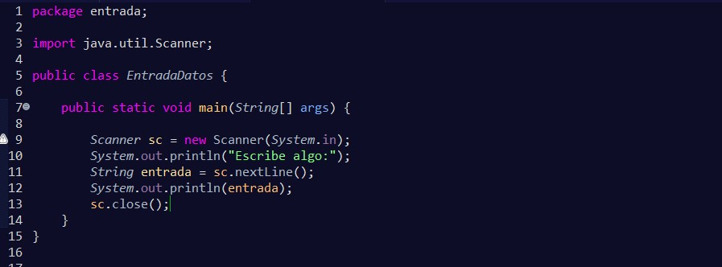

Hasta ahora todo lo que hemos visto ha sido muy estático, no hay interacción por parte del usuario y solo se ha limitado a ver lo que escribíamos.Tener programas así no son muy eficientes, porque se limita a una ejecución y ver lo que ocurre como si de una película se tratara, sólo como un mero espectador.
Es por esto, que creo que ha llegado el momento de dar un poco más de movimiento a nuestros programas y poder interactuar con ellos.
Esta clase fue creada por Java para escanear o capturar datos que que son ajenos a nuestro programa, es decir, que no hemos programado nosotros. En el ejemplo que voy a exponer, se capturarán o escanearán los datos que introduzca el usuario por consola.
No vamos a profundizar ahora mismo en cómo está desarrollada por dentro, ya que esos conceptos se verán más adelante, cuando comencemos a ver las clases. Sólo voy a adelantar cómo podemos usarla en nuestros programas para introducir datos y que sea mucho más ameno el desarrollo de nuestros programas por consola.
En este apartado habrá cosas que ya estés comprendiendo y cosas que todavía no sabes por qué está ahí. Voy a explicar línea a línea el contenido de este código:
Al igual que Scanner, tenemos otra clase para introducir datos, la clase JOptionPane. Pero esta clase lo único que hará será guardar la información que introduzca el usuario mediante un cuadro de diálogo:
Posiblemente te resulte más cómodo utilizar esta clase que la anterior a la hora de escribir el código. Vamos a analizar cada línea de éste:
Ambas clases contienen más funcionalidad de la que se ha explicado en estas líneas, pero de momento con saber esto es suficiente para continuar. Ya profundizaremos más con ellas cuando sea el momento.